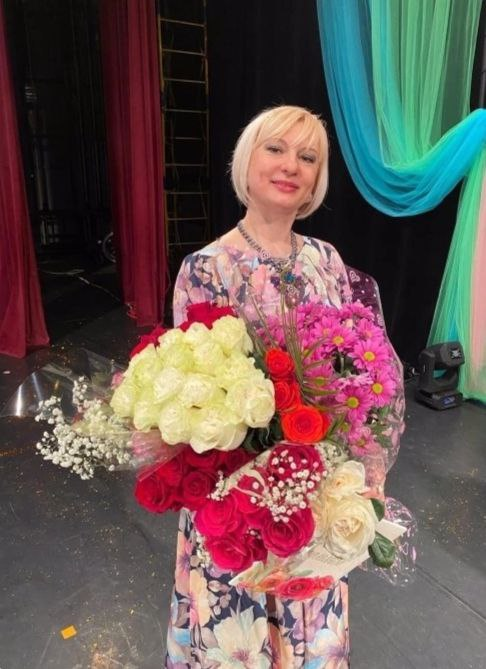

ИРИНА АНДРЕЕВНА КОРОБОВА - руководитель Студии танца Муниципального бюджетного культурно-просветительского учреждения «Конаковский городской Дворец Культуры имени Воровского», балетмейстер Народного ансамбля народного танца "Родничок", Образцового ансамбля эстрадного танца "Мечта" и шоу балет "Бьютис".
Образование:
- в 1985г. Донецкое Культурно-Просветительное Училище Культуры: Культурно-просветительная работа; отделение хореографии;
- в 1990г. Ленинградскую Высшую Профсоюзную Школу Культуры,
по специальности: Культурно-просветительная работа;
специализация: Балетмейстер хореографического коллектива.
Награды:
- Диплом Лауреата Премии работникам отрасли «Культура» в номинации «Лучшим клубным работникам» в 2013г.
- Кандидат занесения на Доску почёта Конаковского района Тверской области в 2016 году.
- Диплом Лауреата Премии работникам отрасли «Культура» в номинации «Лучшим клубным работникам» в 2018г.
- Золотой фонд Конаковского района 2023г.